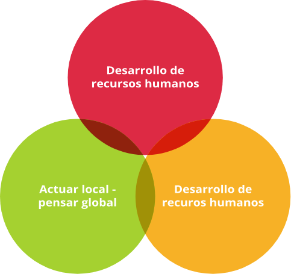
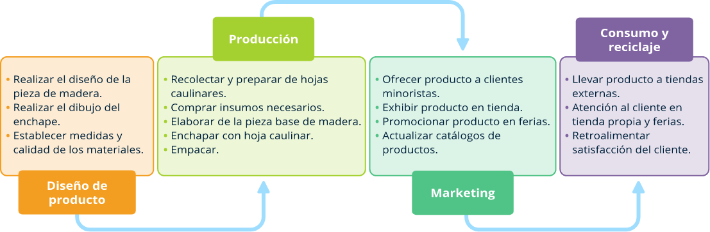
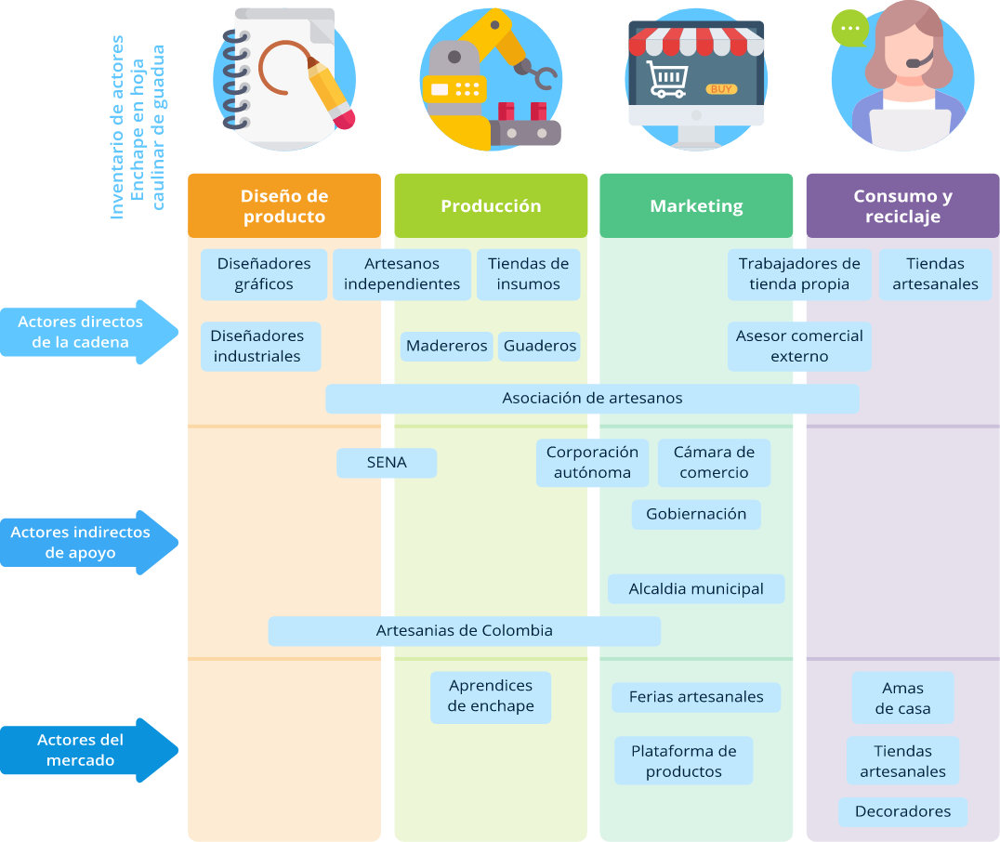
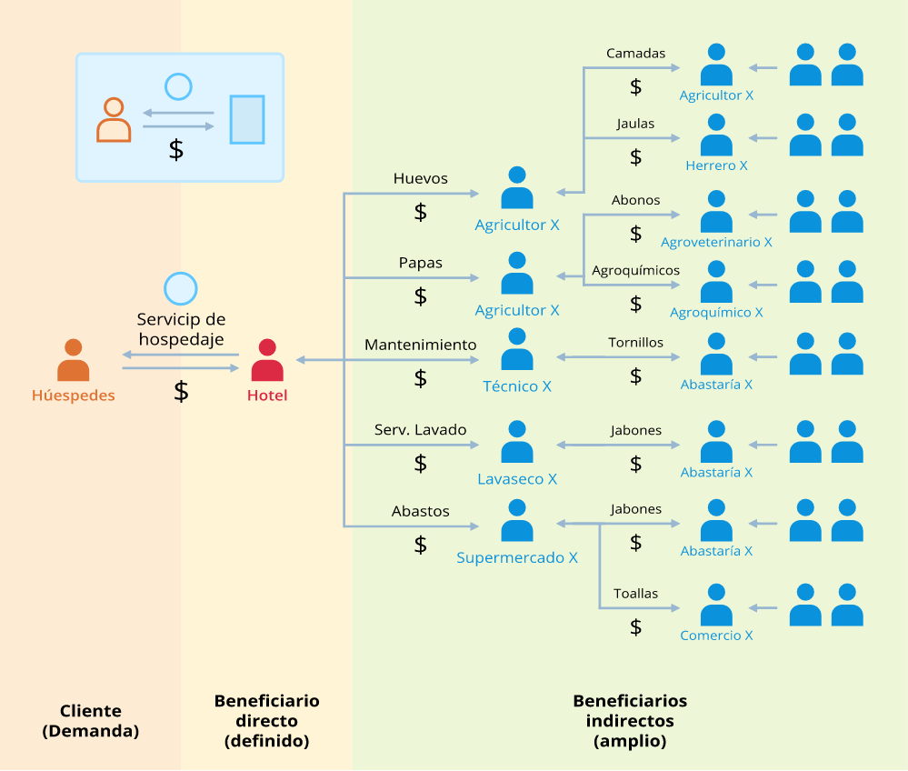

Introducción
El desarrollo, está referido al proceso de cambio y crecimiento que tiene un territorio en términos económicos, sociales, culturales y ambientales; es decir, los procesos que están estrechamente vinculados con un mejoramiento de las condiciones de vida de las personas o sus oportunidades para hacerlo.
En este sentido, la propuesta desde el enfoque OVOP es generar procesos de desarrollo endógeno, lo cual consiste en la identificación, descubrimiento o redescubrimiento de la potencialidad del territorio, en términos culturales, sociales, ambientales, arquitectónicos, productivos, turísticos, etc., como elementos que puestos en valor reactivan la economía local, permitiendo una sostenibilidad social, cultural y económica de las personas en su territorio.
Este tipo de desarrollo se construye atendiendo a una dinámica endógena ascendente, donde los diferentes agentes públicos, privados y comunitarios, participan, concertan y dialogan sobre la base de los recursos disponibles en el territorio con una visión de territorio compartida, realizando acciones conjuntas, con el fin de realizar un aprovechamiento eficiente y sustentable de los recursos existentes.
1. Guía de para el descubrimiento de tesoros locales
Objetivos de la guía
General
Brindar a los interesados insumos conceptuales y metodológicos para la ideación de producto bajo el enfoque OVOP.
Específicos
- Crear un espacio de innovación comunitario donde los participantes generen ideas de producto a partir de los recursos existentes en territorio.
Conceptos
1.1
¿Qué es la idea?
Es un medio de entregar un pensamiento, una manera o una experiencia nueva a la gente.
1.2
Creación de valor
Dentro del enfoque OVOP, el proceso de creación de valor es importante dado que conlleva a que las comunidades e instituciones reflexionen sobre cómo crear valor en los recursos disponible en el territorio; es decir, es importante que los participantes creen y capturen valor, con el fin de lograr nuevos productos y servicios que potencien el desarrollo local del territorio.
1.3
Amplia variedad y bajo volumen
Es una clave del desarrollo local y se puede observar en la mayoría de sus casos exitosos. Consiste en estimular a la comunidad a tener diversos productos, donde se puedan generar ingresos que permita mayores beneficios colectivos. Al hacer un buen aprovechamiento de las características de amplia variedad y bajo volumen, se amplía el potencial de rentabilidad y productividad.
Instrucciones para el desarrollo del taller “Ideación de Producto”
1.4
Condiciones previas
Las siguientes son las condiciones previas que servirán de insumos para este taller:
- Investigación general del municipio o ficha técnica municipal.
- Listado largo de tesoros locales.
- Listado de propuestas de eslóganes del municipio.
- Listado de tesoros locales con mayor potencial.
- Texto descriptivo del sueño colectivo.
1.5
Objetivo del taller
La comunidad, a través de un proceso de innovación colectiva, generan ideas de productos partiendo de los recursos y con el sueño colectivo de su territorio para el desarrollo local.
1.6
Introducción del taller
El instructor explicará a los participantes la metodología para la ideación de productos, la cual básicamente es una lluvia de ideas, donde se tienen en cuenta los insumos mencionados anteriormente.
Los tres principios del movimiento OVOP
1.7
Semillas de ideas
Target: ¿para quién es esta idea?
Problema: ¿qué quiere solucionar con mi idea (recursos)?
Recursos: ¿con qué lo soluciona? (Recursos, producto, servicio, modelo, etc.).
Solución: ¿cómo lo soluciona? (manera/medio para solucionarlo).
En grupos de trabajo, los participantes acogerán uno de los recursos priorizados en el taller anterior Descubrimiento de tesoros locales ¿Con qué lo soluciona?, a partir de los cuales empezarán a escribir diversas ideas alrededor del producto.
Al escribirlas, es necesario hacerlo con ideas concretas. Por ejemplo: ¿para quién?, mujeres - mujeres jóvenes - mujeres jóvenes entre los 20 y 30 años - mujeres jóvenes entre 20 y 30 años que viven en Bogotá, etc.
Cada grupo puede comenzar a escribir la idea preliminar en la hoja de semillas de ideas. En este momento, no es necesario detallar ni profundizar la idea.
Ejemplo. Semilla de idea
| 1. ¿Para quién? | A los turistas |
| 2. ¿Qué quiere solucionar? | Conocer la cultura de Quindío |
| 3. ¿Con qué lo soluciona? | Las artesanías de guaduas (bambu) |
| 4. ¿Cómo lo soluciona? | Vender en las tiendas en Armenia |
1.8
Búsqueda en internet
Luego de escribir la idea preliminar, cada grupo podrá hacer uso de la red de internet, donde realizará búsquedas de imágenes simples de los recursos locales, combinadas y/o en otro idioma del mismo. Como se ejemplifica a continuación:
Mientras se navega en internet, o después de hacer la búsqueda de las imágenes, se aterriza mucho mas la idea, por lo tanto, es importante que revisar los formatos de las semillas de ideas para poder definir los aspectos relevantes de cada una.
1.9
Idea de Producto
Una vez terminan de escribir y modificar, cada grupo pasará de una idea semilla a una idea de producto, realizando un chequeo basada en el instrumento SCAMPER.
SCAMPER es un modelo propuesto para mejorar el método de generación de ideas de la lista de verificación de Alex Osborne, quien es el creador de Brainstorming (lluvia de ideas).
Allí, se utilizan siete preguntas para expandir ideas, específicamente, se consideran las ideas desde una nueva perspectiva basada en las siguientes siete preguntas, las cuales se llaman SCAMPER, porque se toman las iniciales de la anotación en inglés:
Substitute
Sustituir
- ¿Que puede sustituir para bajar costos?
- ¿Que no puede sustituir?
- ¿Cómo puedes sustituir un recurso?
- ¿Qué elemento puedes sustituir para eliminar complejidad del sistema?
Combine
Combinar
- ¿Qué puedes combinar internamente?
- ¿Qué puedes combinar con un factor externo?
- ¿Qué combinación de elementos generaría una reducción de costos?
Adapt
Adaptar
- ¿Cómo lo puedes adaptar para agregar otra función?
- ¿Qué puedes adaptar para que esté disponible a una mayor cantidad de personas?
Modify
Modificar
- ¿Modicando qué atributo puedes disminuir la necesidad de un recurso?
- ¿Qué aplicación puede ser modificada para reducir costos de mantenimiento?
- ¿Qué aplicación puede ser modificada para reducir costos?
Put on other uses
Poner en otros usos
- ¿Qué otro uso se le puede dar?
- ¿Con cual otro uso el objeto sería comercialmente apto para un mayor número de personas?
Eliminate
Eliminar
- ¿Qué función puede ser eliminada?
- ¿Qué función no puede ser eliminada?
- ¿Si eliminas un atributo como el color, el costo disminuye?
Rearrange
Reformar
- ¿Puedes hacerlo más grande/pequeño? ¿Puedes hacerlo más ligero/pesado?
- ¿Cómo lo cambiarías para que ocupe menos espacio físico?
- ¿Si reordenas algunos pasos el proceso tendría menores posibilidades de fallos?
Cada grupo revisa y chequea sus semillas de idea elaboradas utilizando la lista de chequeo SCAMPER.
Depende del producto, no hay que revisar ni chequear todas las preguntas en la lista SCAMPER y luego escribir su idea en la hoja de idea de producto.
Estas ideas de producto serán sujetas a un análisis de cadena de valor, cuyo fin será seleccionar “Mi Producto” en la próxima fase.
Por último, socialice la idea de productos elaborada por cada grupo.
1.10
Conclusión y cierre del taller
- Finalice el taller retomando los principales resultados de este; es básicamente uno: idea de producto.
Informe a los asistentes que en los próximos días se les enviará la sistematización de los resultados del taller, de modo que hagan seguimiento a los resultados de los ejercicios que se están adelantando.
Para conocer en detalle y de manera completa, la Guía para la ideación de Producto se encuentra disponible en el siguiente enlace:
Introducción
Este punto representa la concepción de Mi Producto, lo cual consiste en la selección de un producto OVOP que cumpla con criterios de participación comunitaria, identidad y competitividad, basándose en un análisis simple de la cadena de valor de los tesoros potenciales que se descubrieron en los pasos anteriores.
La selección de dicho producto OVOP, es un antecedente para una buena planificación del territorio y la construcción de una marca territorial alrededor del trabajo colectivo y cooperativo de la comunidad. Si bien la aplicación de esta guía para la selección de Mi Producto OVOP no garantizará su éxito para el desarrollo local, si vislumbrará la ruta de trabajo que se debe desarrollar en el territorio para mejorar la calidad de vida de sus habitantes, a través de un producto identitario, competitivo y participativo.
2. Guía para la construcción del sueño colectivo OVOP
Objetivos de la guía
General
“Brindar a los interesados insumos conceptuales y metodológicos para la construcción del sueño colectivo bajo el enfoque OVOP”, el cual se corrigió por “Conocer cómo realizar el taller de construcción de «sueño colectivo» bajo el enfoque OVOP Colombia”.
Específicos
- Comprender la dinámica de construcción de un «sueño colectivo», la cual consiste en planear una visión u objetivo común que busque revitalizar el territorio.
- Preparar la base para para definir “Mi Producto”, sobre el (los) cual (es) se planificará la ruta de trabajo en la siguiente fase.
Conceptos
2.1
Desarrollo Económico Local
Desarrollo Económico Local es un proceso reactivador de la economía y dinamizador de la sociedad local, que mediante el aprovechamiento eficiente de los recursos endógenos (internos) existentes en una determinada zona, es capaz de estimular su crecimiento económico, crear empleo y mejorar la calidad de vida de la comunidad local. (Del Castillo, 1994, citado por Albuquerque, 1997, pág. 109)
2.2
Cadena de valor y su análisis
Una cadena de valor describe la gama de actividades que se requiere para llevar un producto o servicio desde su concepción, pasado por las fases intermedias de la producción y la entrega hasta los consumidores y su disposición final después de su uso. Esto incluye actividades tales como el diseño, la producción, la comercialización, la distribución y los servicios de apoyo hasta llegar al consumidor final. Las actividades que constituyen una cadena de valor pueden estar contenidas dentro de una sola empresa o divididas entre diferentes empresas, dentro de una única ubicación geográfica o distribuidas en áreas geográficas más amplias. (Kaplinsky & Morris, 2001, pág. 94)
2.3
Productos OVOP
Los productos OVOP, son aquellos que cumplen con características fundamentales para empoderar a las comunidades en su proceso de desarrollo local. Para considerar uno como Producto OVOP, se requiere la identificación participativa del universo de recursos locales presentes en el territorio y posteriormente un punto de vista de valor para convertirlos en tesoros; es decir, recursos que son potenciales para su aprovechamiento comunitario.
2.4
Economía sana según el enfoque OVOP
El término “Economía sana”, se refiere a un modelo económico local donde exista un empoderamiento de la comunidad hacia la creación de valor, la innovación y el mejoramiento continuo, con el fin de superar dificultades estructurales de su economía local para el aumento de la competitividad territorial y la calidad de vida de sus habitantes.
Asuntos preliminares
3.1
Desarrollo Económico Local
Para el desarrollo del análisis de la cadena de valor, se requiere obtener algunos asuntos preliminares que generen la información completa, para realizar el estudio desde los diferentes criterios. Estos asuntos deben ser resueltos antes de iniciar con el proceso de análisis.
En el marco de la ruta metodológica de OVOP, se pueden encontrar las herramientas para obtener los resultados preliminares que se requieren. Así mismo, posterior al análisis de la cadena de valor, existen otros pasos dentro de la ruta que permitirán continuar con el proceso de desarrollo local del territorio, como se muestra en la imagen.
3.2
Ficha técnica municipal
Para estimar el impacto de Mi Producto en la economía municipal, se necesita conocer información económica, geográfica y política del territorio donde se encuentre la iniciativa. Una ficha municipal es un resumen de datos de un territorio determinado que permite visualizar sus características, especialmente las que se pueden asociar al análisis de la cadena de valor, entre las que se encuentran la composición de la población, el número de hogares, la extensión del territorio y la composición económica. Esta información se puede conseguir en las páginas del Departamento Nacional de Planeación DNP, DANE o Federación Colombiana de Municipios.
3.3
Resultados del descubrimiento de tesoros locales
En las primeras fases de la implementación del enfoque OVOP, se realiza el ejercicio de redescubrir y valorar los recursos del territorio, de tal forma que son vistos como Tesoros Locales. Estos tesoros son analizados para destacar aquellos que, desde el punto de vista de la identidad, la unicidad y la oportunidad de aprovechamiento, podrían convertirse en productos OVOP.
El resultado de dicho ejercicio debe estar documentado para que pueda revisarse y retomarse antes de hacer el análisis de la cadena de valor, ya que esto permite conocer, no solo un panorama más amplio de los recursos del territorio, sino también identificar la perspectiva de la comunidad local hacia los mismos. Por lo tanto, se requiere el listado de recursos locales y los tesoros potenciales elegidos.
3.4
Información de productos potenciales
Para medir los impactos de un producto sobre el desarrollo local de un determinado territorio, se requiere en primera medida haber seleccionado al menos dos productos potenciales; es decir, dos diferentes tesoros que tienen valor agregado diferencial que son o podrían ser producidos o comercializados por la comunidad local.
Se hace claridad en que, aunque no haya actualmente la producción o venta de un recurso, si existe una idea de producto o uno mínimo viable (MVP) del que se conozca su proceso de elaboración y comercialización, se puede analizar de igual forma.
La razón fundamental para analizar productos que aún no están en el mercado, es aprovechar la iniciativa o la creatividad que puede surgir en los procesos anteriores para evaluar la oportunidad de estos al convertirse en productos estrella para el desarrollo local.
La información básica necesaria de cada producto potencial es:
Elaboración de una cadena de valor simple
Como se explicó anteriormente, la cadena de valor describe las actividades que se requieren para conducir un producto o servicio desde su concepción hasta la entrega al consumidor e incluso su disposición final, las cuales están inmersas en cuatro fases.
Estas fases se conocen como eslabones de valor y se representan en una estructura horizontal de manera simple. Dentro de cada uno se encuentran las actividades básicas que añaden valor a cualquier producto o servicio.
4.1
Representación gráfica de la cadena de valor
El primer paso para entender el valor de un producto potencial, es realizar una representación simple de su cadena de valor teniendo en cuenta los eslabones ya mencionados.
De esta manera, para cada uno de los productos potenciales que se van a analizar, se deben representar de forma gráfica las operaciones básicas que hacen parte de cada uno de los eslabones de valor.
Para esto, se debe tener en cuenta que hay que simplificar los procesos agrupándolos en actividades de un mismo nivel, de tal forma que la gráfica no se vuelva compleja.
Los invito a observar el video La hoja caulinar se vuelve verde, el cual es muy interesante y nos muestra todo el proceso de este tipo de artesanías.
Representación de la cadena de valor de artesanía en hoja caulinar de guadua
4.2
Información de las actividades
Ahora que se han identificado y representado de manera gráfica las actividades, se deben describir detalladamente la información en cada una de ellas.
La información más relevante para analizar posteriormente es:
- Tiempo: horas que lleva la realización de la actividad.
- Costo: valor económico de la realización de la actividad. Este debe ser un cálculo tentativo de materiales e insumos, horas de trabajo, maquinaria y otros elementos que influyan en el costo.
Si la actividad representa una compra o un servicio externo, en ese caso el valor es el precio que se haya pagado por el mismo.
- Sector económico: definir el sector económico al que pertenece la actividad según la Clasificación Internacional Industrial Uniforme (CIIU).
- Responsables y beneficiarios: cantidad de personas que realizan dicha actividad y se benefician del valor pagado por la misma.
Identificar también características de esta población, si poseen un rasgo particular como, por ejemplo: madres cabeza de hogar, adultos mayores, personas con discapacidad, población rural, entre otros.
En este punto también es importante mencionar si el beneficiario de la actividad pertenece o no a la comunidad, de ser negativa la respuesta, influirá sustancialmente en el análisis de la cadena.
- Oferta potencial: identificar el número de oferentes de esta actividad dentro del territorio determinado; pueden ser personas naturales, empresas u organizaciones.
- Ilustración: si es posible, también se deben incluir dibujos o fotografías de cada actividad para entenderla mejor.
4.3
Inventario de actores
Luego de tener la información básica de las actividades que proporcionan valor al producto, es importante realizar un inventario de actores que permita conocer mejor a los involucrados directos e indirectos en cada uno de los eslabones.
- Actores directos de la cadena: estos son los que se involucran directamente en las actividades de valor; es decir, productores, proveedores, empleados, comercializadores, etc.
- Actores indirectos de apoyo: estos se refieren a aquellas entidades, personas, instituciones o empresas en las que se apoya la cadena de valor para mejorar actual o potencialmente el valor agregado de cada eslabón. Estos actores aportan transferencia de conocimiento, capacitación, asistencia técnica, financiación, promoción, acceso al mercado, etc.
- Actores del mercado: es la descripción sucinta de los compradores o consumidores del producto. Este tipo de actores se pueden encontrar en cualquiera de los eslabones; sin embargo, lo más común es que aparezcan únicamente en el último eslabón de la cadena.
Ejemplo de inventario de actores de una cadena de valor
El inventario de actores no requiere detalles específicos, es un simple mapeo de las relaciones que se presentan entre la cadena de valor del producto y el entorno del territorio.
Por esta razón, no requieren de una investigación profunda, sino una identificación sencilla y práctica de los actores que participan directa o indirectamente en los procesos de valor del producto.
También, se recomienda elaborarlo de manera gráfica para tener un mejor entendimiento de las relaciones de los actores con los eslabones de valor de la cadena.
4.4
Limitaciones y oportunidades
Durante la elaboración de la cadena de valor de un producto, se puede reflexionar constantemente sobre los problemas en las actividades; por ejemplo, debilidad para el costeo, escasez de insumos, dificultad para el transporte; o, por el contrario, ventajas como contar con varios canales de venta, mano de obra especializada, mejoramiento del diseño, entre otros.
Estos factores pueden ser atribuidos a cualquiera de los elementos de la cadena o a los actores del inventario; es decir, se pueden encontrar en cualquiera de los momentos de su elaboración y es importante documentar esta información para posteriormente realizar un análisis más profundo y establecer acciones de mejora sobre Mi Producto OVOP seleccionado.
Análisis de la cadena de valor simple
Para efectos de la presente guía, se analizará la cadena de valor para conocer el impacto económico y los beneficios al territorio.
Los aspectos que se evaluarán son:
Impacto económico municipal.
Número de beneficiarios potenciales.
Distribución de los beneficios.
Posicionamiento interno.
Potencial en el mercado.
Oportunidad de crecimiento.
Adicionalmente, el evaluador que realice el análisis debe tener un conocimiento más profundo del territorio para generar criterios adicionales que permitan visualizar ampliamente el impacto de Mi Producto, según las características propias de cada territorio y de comunidad.
A continuación, se explicarán los seis (6) criterios propuestos desde el enfoque OVOP y el proceso de análisis de la cadena de valor, a través de la herramienta EXCEL diseñada para tal fin.
Nota: tenga en cuenta que este documento (Herramientas análisis cadena de valor) lo encuentra en los materiales complementarios de este componente formativo.
5.1
Impacto económico municipal
En este punto se puede analizar la proporción de beneficios hacia los sectores prevalentes en el municipio, esto se traduce en si los efectos económicos que generan la venta del producto están mayormente en los sectores que predominan en el territorio. La herramienta evalúa automáticamente este valor de la siguiente manera:
| Impacto sectorial | Evaluación de eficiencia |
| 0 - 2,5 | Bajo |
| 2,6 - 5 | Medio |
| 5,1 - 7,5 | Alto |
| 7,6 - 10 | Muy alto |
5.2
Número de beneficiarios potenciales
En este punto se puede analizar la cantidad total de beneficiarios directos actuales, así como los beneficiarios directos potenciales si se llegara a aumentar la producción y venta del producto en relación con el número total de hogares del municipio.
Es decir, este punto considera la proporción de beneficiarios actuales y potenciales de un producto, de acuerdo con su característica poblacional.
Desde el enfoque OVOP, es importante determinar el impacto socioeconómico, si se promociona este como un producto estrella o se aumentan sus ventas. La herramienta evalúa automáticamente este valor de la siguiente manera:
| % Beneficiarios potenciales | Evaluación |
| 0% - 2,49% | Bajo |
| 2,5% - 4,99% | Medio |
| 5% - 7,49% | Alto |
| >7,5% | Muy alto |
Esto quiere decir que, si un producto puede beneficiar potencialmente de manera directa a más del 7,5 % de las familias de un municipio, este es muy altamente considerable para ser Mi Producto por su cantidad de beneficiarios potenciales.
5.3
Distribución de beneficios
Antes de comenzar con este punto, es importante aclarar la estructura de beneficiarios indirectos de una cadena de valor.
Esta se refiere al efecto multiplicador de la economía sobre otras personas o empresas como resultado de la transacción económica de un determinado sector o actividad.
Un ejemplo se ve en el caso de un hotel, donde los huéspedes pagan directamente al propietario y con ello también benefician ampliamente a otros sectores, ya que el valor pagado se usa para comprar; por ejemplo, los insumos necesarios para el desayuno, otros insumos gastables como papel higiénico, personal para mantenimiento del hotel, limpieza, etc.
Ejemplo de distribución de beneficios indirectos
Sin embargo, para conocer el efecto multiplicador de un sector es necesario obtener información más profunda de la cadena de valor; es decir, desarrollar una cadena de valor compleja y valorar los impactos en cada uno de los sectores.
Por lo tanto, para efectos de le presente guía, solo se evaluará la distribución de los beneficios directos de la cadena de valor en relación con las características de los beneficiarios.
La herramienta evalúa automáticamente este valor de la siguiente manera:
| % de la media con respecto a la desciación estándar | Evaluación |
| >100% | Bajo |
| 70% - 100% | Medio |
| 30% - 50% | Alto |
| <50%< /td> | Muy alto |
5.4
Posicionamiento dentro del municipio
Se refiere a una investigación sencilla dentro del municipio que permita establecer el conocimiento, reconocimiento y valor que tiene el producto entre la comunidad local, con el fin de evaluar el posicionamiento interno.
Esta investigación puede hacerse a través de una encuesta sencilla o un grupo focal y no necesita precisión, ya que se esperan obtener resultados cualitativos.
Por lo tanto, se recomienda hacer preguntas cortas con pocas opciones de respuesta que permitan identificar la información que se requiere de manera sencilla y rápida.
Un ejemplo de las preguntas a realizar serían las siguientes:
- ¿Conoce usted el producto XYZ?
- ¿Qué tan representativo cree usted que es XYZ en su municipio?
- ¿Se siente orgullo de XYZ como un producto de su municipio?
- ¿Recomienda usted XYZ a otras personas?
Para efectos del análisis se usará la misma escala de los tres criterios anteriores, con las siguientes consideraciones:
| Resultado cualitativo de la información | Evaluación |
| El producto no es conocido por la población local. | Bajo |
| El producto es conocido, pero no es recomendado por la población local. | Medio |
| El producto es conocido y recomendado, pero aún no representa identidad para la población loca. | Alto |
| El producto es conocido, recomendado y respresenta orgullo para la población local. | Muy alto |
5.5
Potencial en el mercado
Este criterio busca conocer el comportamiento en el mercado de los candidatos a Mi Producto, así como las características de sus oferentes y demandantes. Para ello, se recomienda realizar entrevistas sencillas a los productores y a los actuales o potenciales compradores de los productos que se evalúan.
Al igual que en el punto anterior, no es necesario obtener datos detallados, ya que aún se hace referencia a productos candidatos.
Puede entrevistar brevemente algunos productores y clientes usando como referente el siguiente ejemplo:
- ¿El producto XYZ ya se está vendiendo actualmente?
- ¿Cuál es el volumen de ventas con respecto a la capacidad de producción?
- ¿XYZ tiene un mercado cercano y grande?
- ¿Se conocen las características del mercado?
- ¿Se conocen los productos que compiten con XYZ?
- ¿Hay ventaja de XYZ para competir en un mercado potencial?
- ¿Qué valor agregado ofrece el producto XYZ con respecto a otros productos similares?
Para efectos del análisis se usará la misma escala de los tres criterios anteriores, con las siguientes consideraciones:
| Resultado cualitativo de la información | Evaluación |
| El producto aún no se está vendiendo ni se conoce un mercado potencial. | Bajo |
| El producto no se vende o se vende en pocas cantidades, pero hay un mercado potencial identificado que puede ser asequible. | Medio |
| El producto se vende actualmente y hay mercado potencial factible, pero el producto no es lo suficientemente competitivo. | Alto |
| El producto se vende actualmente, hay mercado potencial factible y el producto es muy competitivo. | Muy alto |
5.6
Oportunidad de crecimiento
La oportunidad de crecimiento se refiere a las diferentes opciones que tiene el producto para fortalecerse, mejorar su competitividad y expandirse en el mercado, de acuerdo con la oferta de servicios y el interés que tienen los actores locales en el producto.
Estos actores pueden ser cámaras de comercio, gremios, gobernaciones, alcaldía u otras entidades públicas y/o privadas relacionadas con los sectores a los que pertenecen los productos a evaluar.
Para establecer la oportunidad de crecimiento se pueden identificar intenciones de apoyo, fuentes de financiación o programas actuales que generen una perspectiva más amplia de los productos. Así mismo, es importante identificar el número de oferentes de las diferentes actividades que integran la cadena de valor y su forma de organización.
Esta información se pudo haber establecido en el inventario de actores; sin embargo, en este paso se requiere una investigación más profunda sobre dichos actores.
Para evaluar este punto se tienen en cuenta las siguientes consideraciones:
| Resultado cualitativo de la información | Evaluación |
| Los oferentes del producto o de su cadena no están organizados ni formalizados y los actores locales no tienen oferta para fortalecer los procesos del producto. | Bajo |
| Los oferente del producto o de su cadena están formalizados, pero no hay organización o articulación y la oferta institucional alrededor del sector es mínima. | Medio |
| Los oferentes del producto o de su cadena están formalizados, pero no hay organización o articulación. Sin embargo, hay interés de los actores locales por apoyar el producto a través de su oferta de fortalecimiento. | Alto |
| Los oferentes del producto o de su cadena están formalizados y organizados, hay articulación entre los mismos. Hay alto interés de los actores locales por apoyar el producto y oferta institucional para el fortalecimiento es amplia. | Muy alto |
Uso de herramienta Excel para análisis de cadena de valor
Para realizar los cálculos anteriormente expuestos y generar un análisis más organizado de la información, se sugiere usar la herramienta de Excel por medio del documento (Herramientas análisis cadena de valor) que se adjunta a este componente formativo en los materiales complementarios, el cual le permitirá obtener gráficos de resumen sobre los que se puede basar su análisis y posterior presentación a la comunidad.
Antes de introducir cualquier dato o información, guarde el archivo con el nombre del producto y del municipio como un nuevo archivo. Así conservará siempre la herramienta en blanco para realizar otros análisis. Ejemplo: Sombrero Tuchín.
Introduzca el nombre del producto y la información de la cadena de valor en la hoja CADENA DE VALOR.
Introduzca el nombre del municipio y la información de este en la hoja INFO BASE.
Introduzca los resultados de los análisis cualitativos en la hoja INVESTIGACIÓN.
A continuación, podrá ver la hoja de RESUMEN donde encontrará la información de la caracterización del producto.
De acuerdo con la información obtenida y al gráfico radial que se muestra, describa brevemente y de acuerdo con su perspectiva el análisis general del producto, así como sus observaciones y recomendaciones.
Copie esta información y anéxela a la información gráfica de la cadena de valor para realizar una presentación a su comunidad.
Así mismo, se recomienda usar herramientas gráficas que permitan el entendimiento del proceso de evaluación de los productos, de esta manera, cada uno de los aspectos evaluados sean comprendidos por el comité local o grupo de productores al momento de su presentación.
Cuanto más recursos visuales y gráficos tenga la presentación, más comprensible será para el público, ya que las cifras por sí solas no son fácilmente comprensibles. Use fotografías, dibujos, ejemplos, flechas y todos los elementos posibles para mostrar estos resultados.
5.7
Recomendaciones finales
- Culminados los pasos anteriores de la ruta metodológica de OVOP y compartidos los resultados de los estudios de los tesoros potenciales y candidatos a Mi Producto, el comité local podrá elegir conscientemente cuál será Mi Producto OVOP que sirva como herramienta para mejorar la competitividad de su territorio y la calidad de vida de sus habitantes.
Para conocer en detalle, la Guía para el estudio de Cadena de Valor Simple y selección de Mi Producto, se encuentra disponible en el siguiente enlace:
Glosario
Análisis de Cadena de valor simple:proceso que permite determinar la creación de valor agregado, la relación de este con la generación de ganancias y la distribución de ganancias entre los actores de la cadena de valor.
Creación de valor:a partir de los recursos existentes, es un modelo útil para que los territorios exploren sus ventajas competitivas, a través del descubrimiento de sus recursos locales. En este sentido, el enfoque y la metodología OVOP dirige a las comunidades a hacer un análisis y diagnóstico interno, que le permite identificar la potencialidad de sus recursos, generando procesos innovación alrededor de estos.
Idea:es un medio de entregar un pensamiento, una manera o una experiencia nueva a la gente, y ese algo nuevo es un requisito esencial.
Material complementario
| Nombre del documento o material | Tipo de material | Enlace del recurso |
|---|---|---|
| JICA. (2020). Guía Metodológica 3. Ideación de Producto. | Descargar | |
| JICA. (2020). Guía Metodológica 4. Estudio para Cadena de Valor Simple y selección de Mi Producto. | Descargar | |
| OVOP. (2020). Herramienta Excel Análisis cadena de valor. | Xlsx | Descargar |
| Mapatur. (2017). La hoja caulinar se vuelve arte. | Video | Ver |
| Universidad Continental. (2017). Scamper | Video | Ver |
Referencias bibliográficas
Alburquerque, F. (1997). Desarrollo Económico Local y Difusión del Progreso Técnico. Cuadernos del ILPES 43. CEPAL, Naciones Unidas.
Bellù, L. G. (2013). Value Chain Analysis for Policy Making. Food and Agriculture Organization of the United Nations, FAO.
Comisión Económica para América Latina y el Caribe (CEPAL). (2020). Cadenas de Valor. Bilblioguías.https://cutt.ly/1iyIbHG
Kaplinsky, R. & Morris, M. (2001). A Handbook for Value Chain Research. Institute of Development Studies.
Nutz, N. y Sievers, M. (2016). Guía General para el Desarrollo de Cadenas de Valor. Organización Internacional del Trabajo (OIT).
Thiel, P. (2000). De Cero a Uno - Cómo Inventar el Futuro. Editorial Gestión 2000.